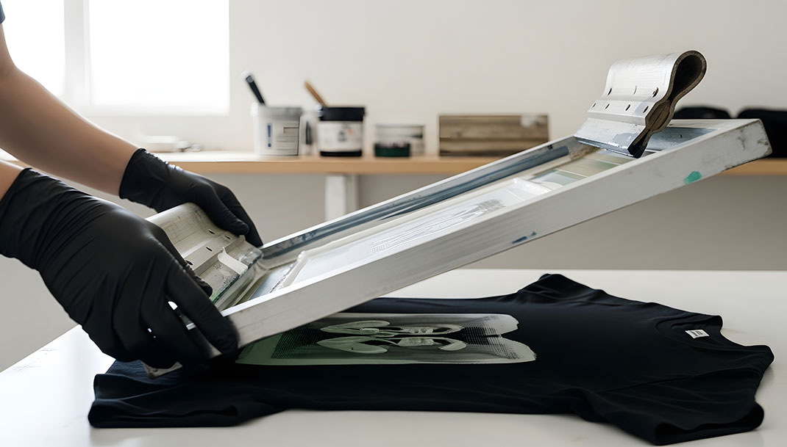

はじめに
製造業において、表示・ラベル・銘板・操作パネル・フィルム印刷は、製品品質や安全性を支える重要な要素です。
その中核となる技術のひとつがシルク印刷（スクリーン印刷）です。
シルク印刷は単なる印刷方法ではなく、耐久性・視認性・機能性を実現する工業技術として長い歴史の中で発展してきました。
本記事では、BtoB企業・製造業の視点から、シルク印刷の歴史と価値を整理して解説します。
1. シルク印刷の起源（染色技術からの発展）
シルク印刷の起源は古代中国の型染め技術にあります。
布や紙に模様を転写するための「型」と「インク（染料）」を使った技術が、スクリーン印刷の原型となりました。
日本の友禅染めなどの技術とも融合し、「版を通してインクを転写する」という基本構造が確立されていきます。
技術の本質としては以下の特徴がありました。
・版を使ってインクを転写
・均一な品質を再現
・素材に直接印刷
・高い再現性
この時点で、すでに量産と品質安定に適した技術の基礎が完成していました。
2. 工業印刷としての確立（19～20世紀）
19世紀後半になると、ヨーロッパでシルクメッシュを使った印刷版が開発され、現在のスクリーン印刷の基盤が誕生します。
20世紀初頭には、感光乳剤による精密製版やインク制御技術などが確立され、工業的な量産が可能になりました。
主な進化は以下の通りです。
・感光乳剤による精密製版
・インク制御技術の発展
・版の耐久性向上
・量産対応
・産業化の進展
これにより、シルク印刷は手工芸から工業技術へと大きく進化しました。

3. 製造業での普及（1930～1970年代）
産業の高度化とともに、シルク印刷は製造業のさまざまな分野へと広がっていきます。
電気・電子業界では操作パネルや基板表示、
自動車・機械業界では銘板や警告ラベル、
家電・産業機器ではブランドロゴや製品表示などに活用されました。
この時代に、耐久性・視認性・密着性に優れた印刷技術として広く定着していきます。
次回予告
次回は、シルク印刷とデジタル印刷の具体的な違いや、それぞれの適材適所について、より実務的な視点から解説していきます。
製品設計や表示方式の選定において、どのような判断基準があるのかを整理し、実際の製造現場での活用イメージまで踏み込んでご紹介します。